Автоматизация частной клиники
«Orzu Medical» — cеть частных клиник, использовала бумажный документооборот, Excel-таблицы и несколько разрозненных программ. Информация о пациентах дублировалась между отделениями, поиск был долгим, а хранение — сложным.
Задача — перевести основные процессы клиники в цифровую среду и объединить работу филиалов в единой системе.
Я отвечал за исследование процессов, проведение интервью с сотрудниками, проектирование сценариев, UX/UI-дизайн, а также участвовал во внедрении и тестировании системы.
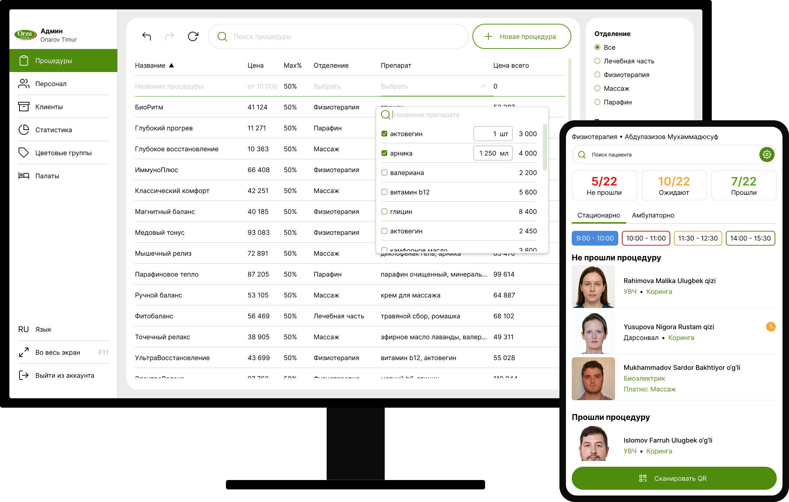
Погружение в процессы клиники
Начал с интервью сотрудников всех уровней: руководство клиники, технический администратор, регистраторы, врачи, сотрудники лабораторий и процедурных кабинетов. Нужно было понять, как устроена работа каждого отделения клиники, какие данные используются в ежедневной работе и какие сложности возникают в существующих процессах.
Из интервью я узнал, что большинство сценариев значительно сложнее, чем выглядело на первый взгляд. Например, сотрудники регистратуры, помимо оформления новых пациентов, консультировали, помогали найти нужный кабинет, контролировали пропущенные процедуры, проводили платежи, формировали документы сделки, подписывали договор и фактически выполняли роль координационного центра клиники.
Врачи, помимо первичного приёма, ежедневно обходили пациентов стационара, корректировали лечение, вели медицинские дневники и готовили документы на выписку. Все эти задачи были тесно связаны между собой и требовали постоянного доступа к данным пациента.
В процедурных кабинетах, пока проводится длительная процедура для пациента, параллельно сотрудник проводит короткие процедуры другим пациентам. Одного пациента нередко сопровождают сразу несколько сотрудников.
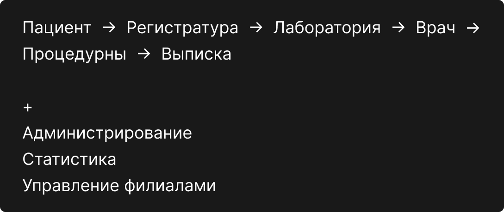
Единая система
Во время исследования я восстанавливал полный путь пациента внутри клиники. Информация, собранная на регистрации, использовалась лабораториями. Результаты анализов попадали к врачу. Назначенное лечение передавалось процедурным кабинетам. Собранные данные использовались для подготовки выписки и формирования статистики.
Вместо проектирования отдельных интерфейсов для каждого подразделения я рассматривал систему как единый продукт, внутри которого данные непрерывно перемещаются между сотрудниками.
У меня также были технические и временные ограничения, которые нужно было учитывать при проектировании интерфейса.
После предварительного проектирования стало понятно, что большинство сотрудников будет пользоваться сервисом через корпоративные планшеты, и для ускорения разработки я строил библиотеку компонентов для планшета с переиспользованием в компьютерной и мобильной версиях.
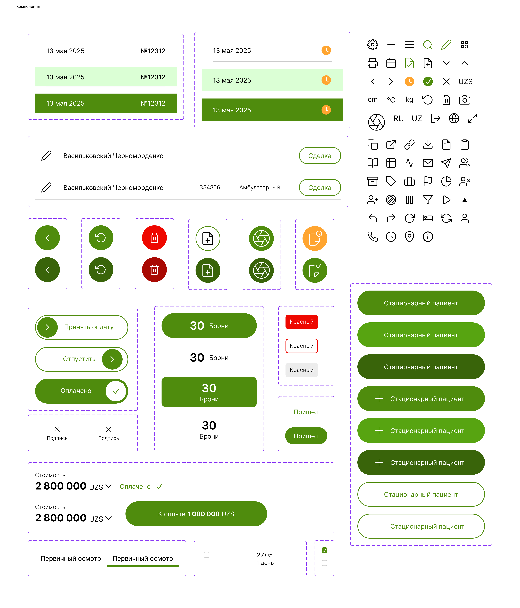
Это не полный UI-kit
Регистратура
На основе информации о том, как регистратор ориентируется по существующим пациентам, чтобы их сориентировать, я сделал список текущих пациентов с фильтрацией на главном экране.
Вывел кнопки создания амбулаторных и стационарных пациентов в верхние углы экрана, чтобы было проще целиться и вырабатывалась привычка. Создание и поиск пациентов доступны из любой точки системы, чтобы регистратору не нужно было возвращаться на главный экран, если во время работы с карточкой пациента пришёл новый посетитель.
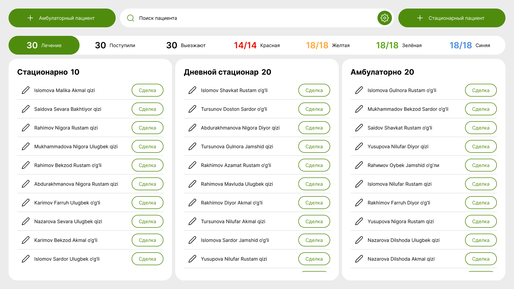
Разделил форму на смысловые этапы. В клинике заполнение паспортных данных было первым шагом при регистрации пациента. Я сделал его последним, чтобы пациент мог начать сдавать анализы, пока регистратор заполнял данные по скану документа. Сам скан я вывел рядом с формой, чтобы было легче сверять данные.
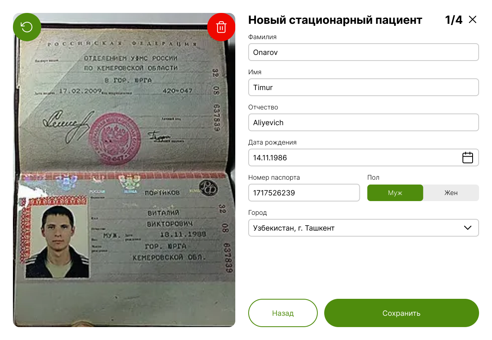
Избежал окон подтверждений, которые на автомате пропускаются, сделав возможность отменять действия или вернуться к незавершённым, к примеру, если форма была недозаполнена.
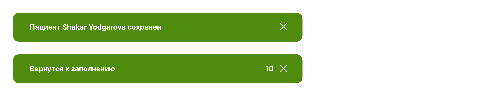
Экран профиля пациента разделил: информацию — слева, выбор сделки с пациентом — справа, а информацию по выбранной сделке — в центре. Если была внесена часть суммы, кнопка к оплате указывает остаток суммы.
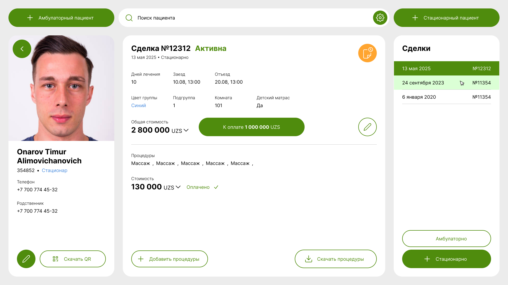
Чтобы регистратор не принял случайно оплату, кнопка не нажимается, а свайпится, но, если и это было сделано ошибочно, всё ещё можно отменить действие.
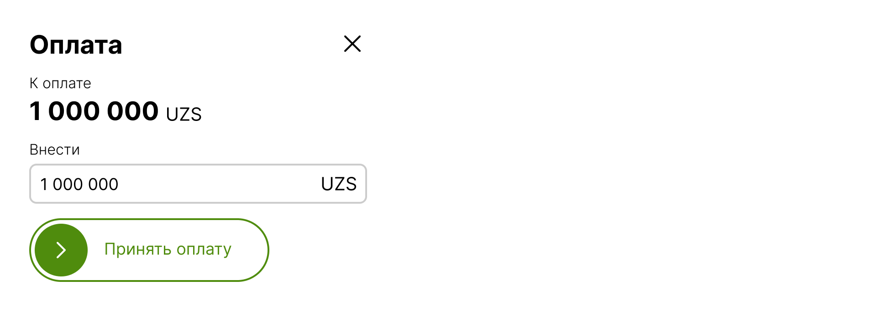
Конструктор медицинских заключений
Лаборатории приходилось вручную писать результаты обследований. Я спроектировал конструктор заключений, в котором врач последовательно проверяет органы и выбирает обнаруженные отклонения из списка справа, добавляя уточнения слева. Так врач формирует заключение, которое удобно быстро проверить перед завершением осмотра.
Навигация справа играет роль чек-листа с индикацией прогресса по пройденным органам и показывает, в каком модуле осмотра сотрудник лаборатории сейчас находится.
Эти решения позволили сократить объём ручного ввода и сделать данные более структурированными.
Интерфейс врача
В ходе исследования я узнал, что рабочий день врача делится на этапы, поэтому построил интерфейс вокруг реального рабочего дня специалиста. Система была разделена на два основных режима: приём пациентов и обход стационара.
Во время приёма врач работает со списком пациентов, изучает результаты анализов, собирает анамнез и назначает лечение. Во время обхода интерфейс перестраивается под структуру стационара. Пациенты группируются по этажам и палатам, позволяя врачу двигаться по системе так же, как он перемещается по клинике. При выписке данные, собранные во время первичного осмотра, анализов, ведения дневника и постановки диагноза, автоматически формируют документ обоснования лечения, и врач может в нём что-то поправить при необходимости.
Это позволило снизить количество переключений между разделами, сделать интерфейс более предсказуемым в ежедневной работе и сократить количество ручных записей.
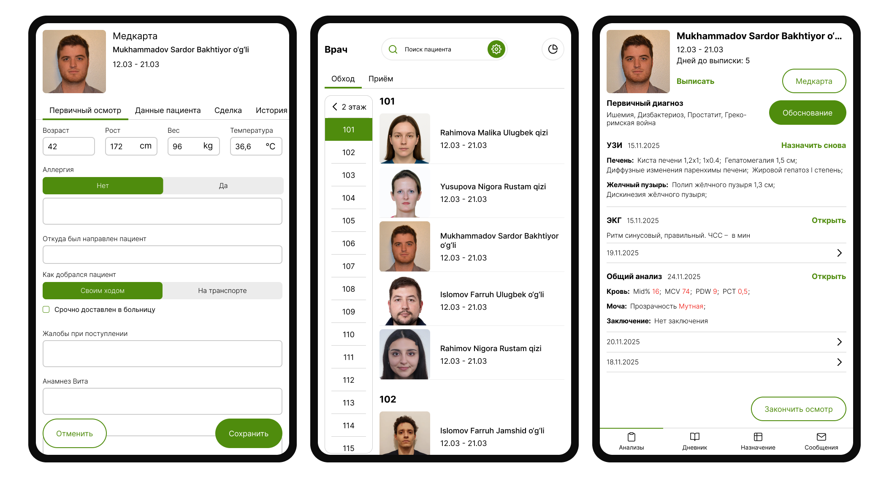
Процедурные кабинеты
Пациент заходит в порядке очереди, сотрудник сканирует карточку с QR-кодом, и на экране планшета появляются назначенные процедуры, препараты и ограничения, которые нужно учесть, к примеру, если у пациента был инсульт.
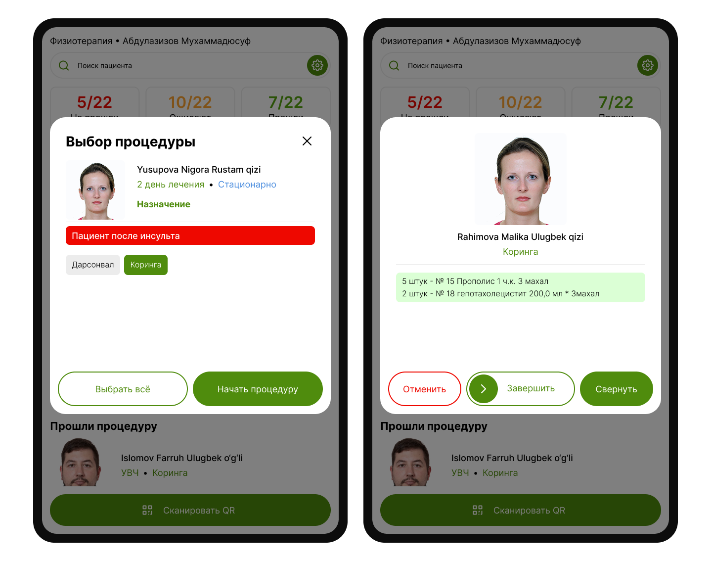
Интерфейс также отображает пациентов, которые ещё не прошли назначенные процедуры, что помогает сотрудникам эффективнее использовать свободное время.
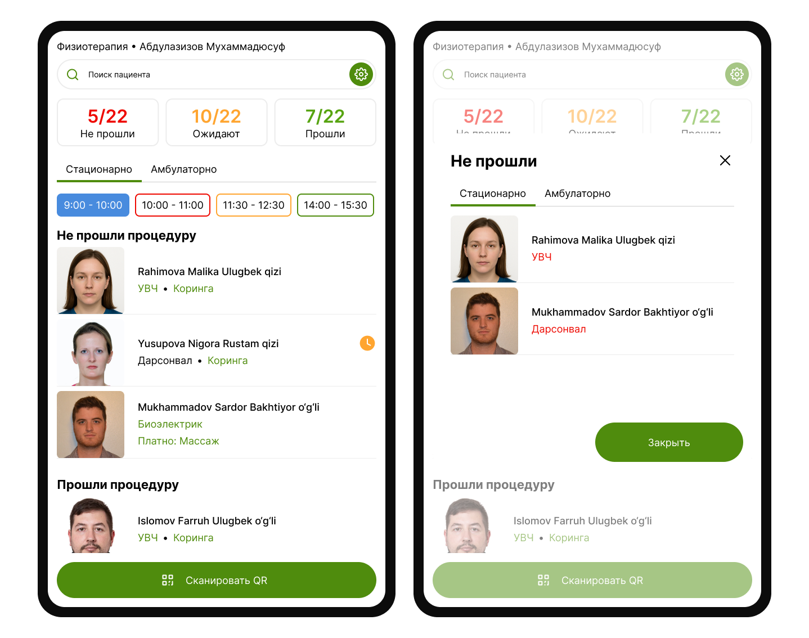
Администрирование сети клиник
Система должна была поддерживать несколько филиалов, различные отделения, процедуры, цветовые группы пациентов, палаты и расписания. При этом большинство настроек должно было выполняться администраторами без участия разработчиков.
Поскольку администраторы регулярно обновляют и редактируют список процедур, редактирование было реализовано непосредственно в таблице. Добавление новой процедуры не прерывает рабочий процесс и не требует перехода на отдельный экран.
Работу с цветовыми группами отобразил максимально наглядно для администратора: вывел список отделений, время привязал к цветовым группам, к группам привязал списки палат и дал возможность редактировать палаты одним кликом.
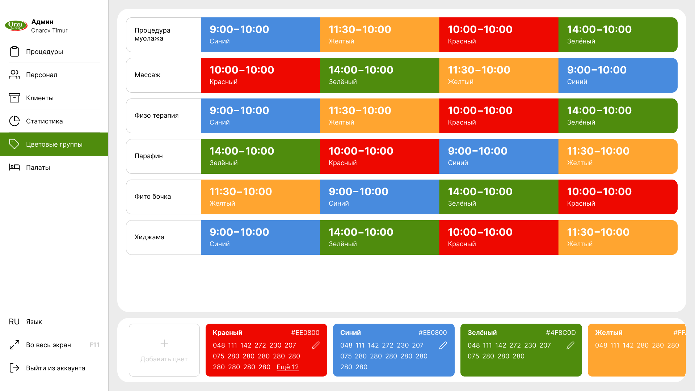
Такой подход позволил значительно сократить количество действий при повседневной настройке системы.
Итог
В результате была спроектирована, протестирована и внедрена единая медицинская система для сети из пяти филиалов. Она охватывает регистрацию пациентов, лабораторную диагностику, работу врачей, проведение процедур, администрирование и сбор статистики.
Помимо создания отдельных интерфейсов, задача состояла в переводе сложных процессов клиники в цифровую среду. Для этого потребовалось разобраться в работе каждого подразделения, выявить взаимосвязи между ними и построить систему, которая поддерживает ежедневную работу сотрудников на всех этапах лечения пациента.
Частная клиника Orzu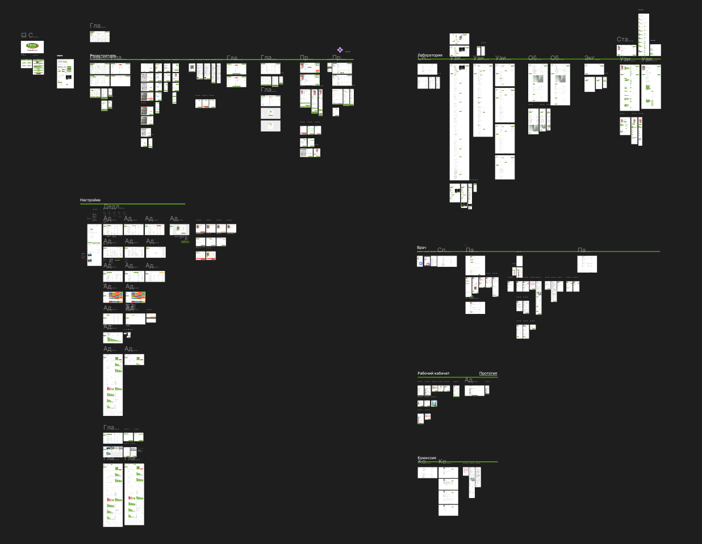